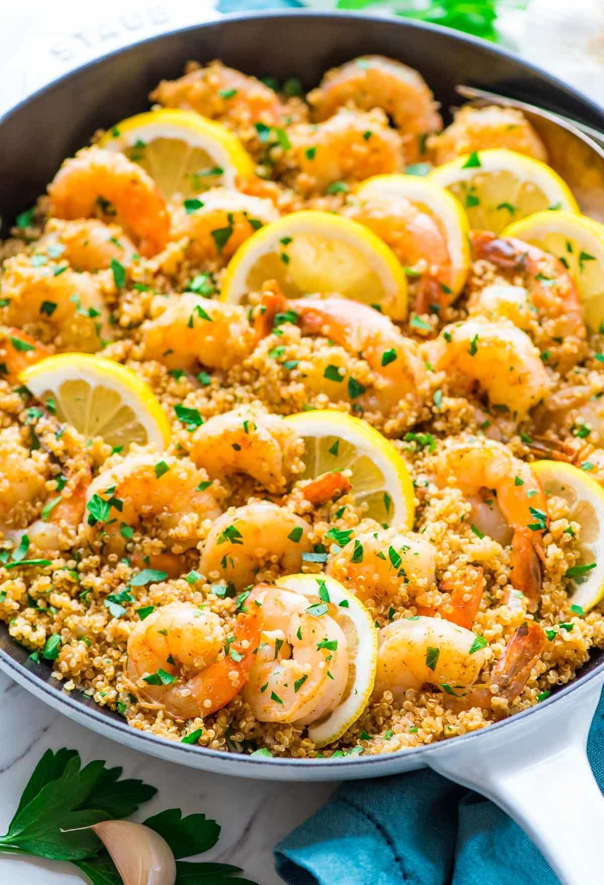

Home
Garlic Shrimp with Quinoa

Description
This recipe yields 2 portions. I recommend using it as an entrée.
The simple ingredients make this a well-suited option for people with gluten or lactose intolerance.
Ingredients
- 4tsp olive oil
- 500g shrimp
- 1tsp salt
- 1/2 tsp chili powder
- 1 onion
- 3 cloves garlic
- 1 cup uncooked quinoa
- 1/4ts cayenne
- 2 cups chicken broth
- 1 large lemon
- 3 tbsp parsley